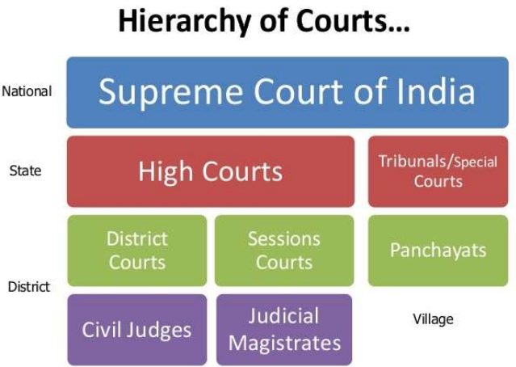

Describe about the Organisation of Courts in India
• There are various level of judiciary in India - different courts each with varying powers depending on tier and jurisdiction given to them
• They form strict hierarchy of importance, in line with order of courts in which they sit with Supreme Court of India followed by High Courts with district judges sitting in District Courts and Magistrate of Second Class and Civil Judge at bottom